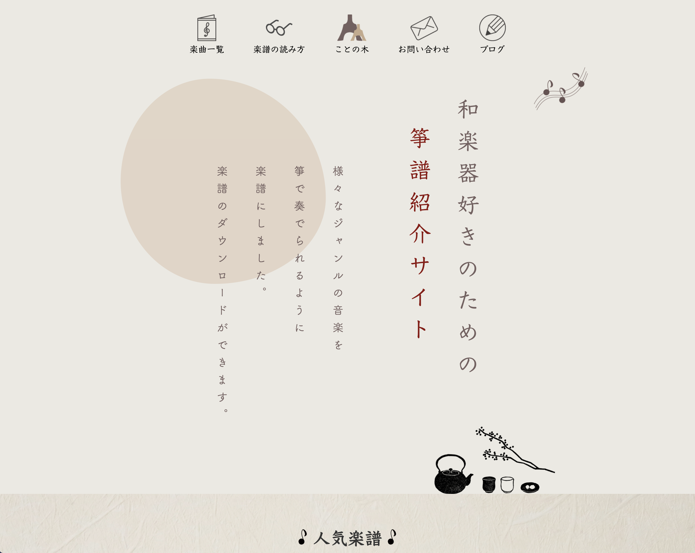

お箏の楽譜紹介サイト
【ポートフォリオURL】https://koto.risacreate.jp/
【クライアント】ことの木 様
【制作時期】2021.7
【作業期間】1.5ヶ月
【使用ツール】Photoshop、Illustrator、Dreamweaver
【経験】HTML / CSS / jQuery / レスポンシブデザイン / XD
【案件概要】クラシックやJ-POPなどの様々なジャンルの音楽を、箏で弾けるようにカバーした楽譜を紹介するサイトで、楽譜のダウンロードが可能。
意図・ポイント
ターゲットユーザーである「昔箏をやっていたことがあり、新しい曲に挑戦したいと思っている50代女性」と「箏サークルに入っているJ-POPや映画の曲が好きな20代女子大学生」に響くよう、「和風感や温もりのあるデザインで、落ち着きのあり親しみやすい印象」をコンセプトに制作しました。落ち着いた印象を出すために、落ち着きのあるベージュを基調とし、和紙のような質感の背景を入れました。また、楽譜のジャンルごとに色分けを行い、クラシック（イエロー）、J-POP（ピンク）、童謡・その他（紫）の3色でまとめることで、わかりやすい情報整理を心掛けました。
問題と解決策
ターゲットは５０代であるため、見やすさや、わかりやすさを重視したUI設計を心掛けました。ヘッダーにはロゴを入れ、楽譜の紹介にはYoutubeロゴなどを入れることで、クリックしたらどこに行くのか一目見て見てわかるようにしました。また、５０代はPCを利用してサイトを訪れる機会が多いと考え、PCでは50代が第一ペルソナ、スマートフォンでは20代を第一ペルソナとして設計しました。幅広い年代に興味を持ってもらえるよう、シンプルでわかりやすく落ち着いた印象にすることを心掛けました。